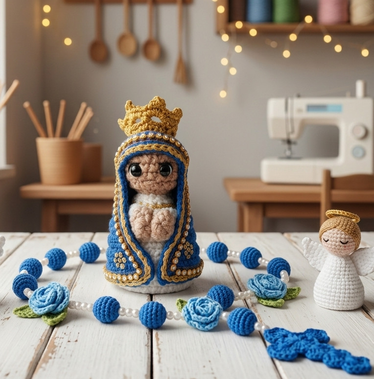

Ticia Ávila
artes
Receita de Amigurumi

Materiais
Fio 100% algodão
Agulha 2.5mm
Fibra siliconada
Agulha de tapeçaria
Modo de Fazer
Inicie com anel mágico.
Faça 6 pontos baixos.
Aumente conforme receita.
Finalize e feche com ponto baixíssimo.
Compartilhar Receita